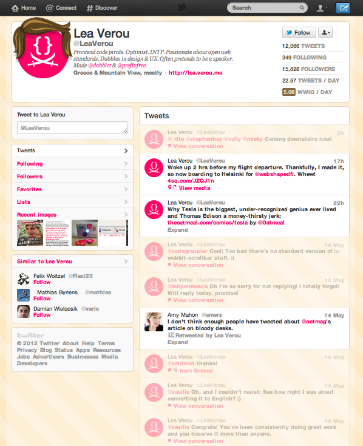

WWIG
(if I followed you)
A Tiny Tool
for the Discerning Twitter User
WWIG takes a Twitter user's timeline and fades out the tweets that wouldn't cross your stream, giving you more of a sense of the content you'd get if you clicked "follow."
A few stats are quickly calculated as well (like Tweets per Day), so you know a little bit more about the user you're looking at.
A handsome WWIG is also dropped on the user's avatar. Truly vital.
Grab the following bookmarklet, try it on any user's timeline on twitter.com.
WWIG
A Sample
look at the Talented @Lea_Verou
Only 5 of Ms. Verou's 23 daily tweets would actually be seen by her average follower.
This is very clear with a WWIG on, but otherwise we're overwhelmed with a barrage of "Coming downstairs Now!" or "Sorry I didn't get back to you" noise.
Not sure why Twitter doesn't do this natively, but until it does, feel free to use or fork WWIG.
Roadmap
HA. There's no roadmap.
There isn't even a bus stop.
But if there's something you think WWIG should do, like a more relevant set of stats, drop me a line. @jgmakes